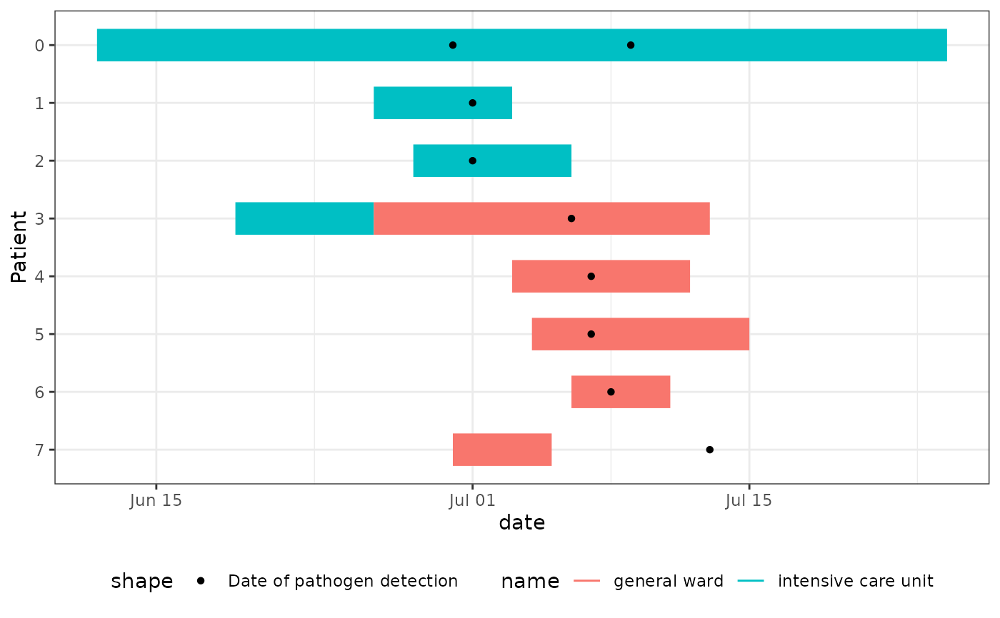

Epi Gantt Chart: Visualize Epidemiological Time Intervals
Source:R/geom_epigantt.R
geom_epigantt.RdCreates Epi Gantt charts, which are specialized timeline visualizations used in outbreak investigations to track potential exposure periods and identify transmission patterns. They are particularly useful for:
Hospital outbreak investigations to visualize patient movements between wards
Identifying potential transmission events by showing when cases were in the same location
Visualizing common exposure times using overlapping exposure time intervals
The chart displays time intervals as horizontal bars, typically with one row per case/patient. Different colours can be used to represent different locations (e.g., hospital wards) or exposure types. Additional points or markers can show important events like symptom onset or test dates.
geom_epigantt() will adjust the linewidth depending on the number of cases.
Usage
geom_epigantt(
mapping = NULL,
data = NULL,
stat = "identity",
position = "identity",
...,
na.rm = FALSE,
show.legend = NA,
inherit.aes = TRUE
)Arguments
- mapping
Set of aesthetic mappings. Must include:
y: Case/patient identifierxmin: Start date/time of intervalxmax: End date/time of intervalOptional:
colourorfillfor different locations/categories
- data
The data to be displayed in this layer. There are three options:
If
NULL, the default, the data is inherited from the plot data as specified in the call toggplot().A
data.frame, or other object, will override the plot data. All objects will be fortified to produce a data frame. Seefortify()for which variables will be created.A
functionwill be called with a single argument, the plot data. The return value must be adata.frame, and will be used as the layer data. Afunctioncan be created from aformula(e.g.~ head(.x, 10)).- stat
A
ggplot2stat. Defaults to"identity".- position
A
ggplot2position. Defaults to"identity".- ...
Other arguments passed to
ggplot2::layer().
The following parameters are specific togeom_epigantt:linewidth: Set width of bars directly, disables auto-scaling if set.lw_scaling_factor: Scaling factor for auto-width calculation. The linewidth is calculated as lw_scaling_factor/number_of_rows (default: 90)lw_min: Minimum auto-scaled line width cutoff (default: 1)lw_max: Maximum auto-scaled line width cutoff (default: 8)
- na.rm
If
FALSE, the default, missing values are removed with a warning. IfTRUE, missing values are silently removed.- show.legend
logical. Should this layer be included in the legends?
NA, the default, includes if any aesthetics are mapped.FALSEnever includes, andTRUEalways includes. It can also be a named logical vector to finely select the aesthetics to display.- inherit.aes
If
FALSE, overrides the default aesthetics, rather than combining with them. This is most useful for helper functions that define both data and aesthetics and shouldn't inherit behaviour from the default plot specification, e.g.borders().
Examples
library(dplyr)
library(tidyr)
library(ggplot2)
# Transform hospital outbreak line list to long format
linelist_hospital_outbreak |>
pivot_longer(
cols = starts_with("ward"),
names_to = c(".value", "num"),
names_pattern = "ward_(name|start_of_stay|end_of_stay)_([0-9]+)",
values_drop_na = TRUE
) -> df_stays_long
linelist_hospital_outbreak |>
pivot_longer(cols = starts_with("pathogen"), values_to = "date") -> df_detections_long
# Create Epi Gantt chart showing ward stays and test dates
ggplot(df_stays_long) +
geom_epigantt(aes(y = Patient, xmin = start_of_stay, xmax = end_of_stay, color = name)) +
geom_point(aes(y = Patient, x = date, shape = "Date of pathogen detection"),
data = df_detections_long
) +
scale_y_discrete_reverse() +
theme_bw() +
theme_mod_legend_bottom()
#> Warning: Removed 7 rows containing missing values or values outside the scale range
#> (`geom_point()`).
